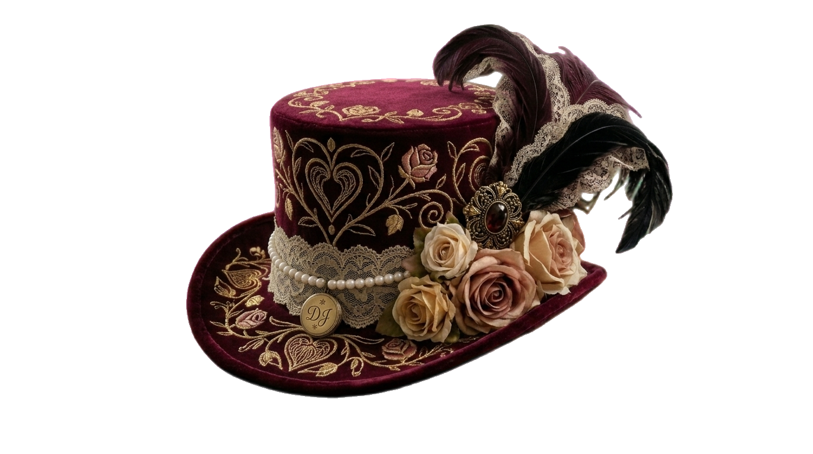

We each keep a closet of our selves. Most people spend a lifetime in a single outfit and call it identity. I learned to read the occasion and choose the cloth — the romantic, the futurist, the world-builder, the architect — and to hang the hat back up when the moment had passed.
I don't write under pen names because I'm hiding. I write under pen names because I own many hats, and each one sees a truth the others can't.
These are the hats.

Vesper Locke
The Futurist's Hat · Science Fiction
For the cold, clear future — where bodies become data, cities run on control, and rebellion learns to speak in code, motion, and the things a system can't delete.
Enter this world →
Eveline Cross
The Wonder Hat · Portal Fantasy
For the doors between worlds and the price of walking through one — found family, costly magic, and ordinary people handed extraordinary, dangerous stakes.
Enter this world →
Mira Lavelle
The Romantic's Hat · Gothic Romance
For the way love rewrites a life, and the secrets that refuse to stay buried — atmospheric stories about women who will not be authored by anyone but themselves.
Enter this world →